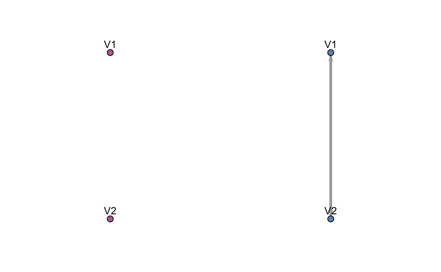

A quick tour of mixggm
Luca Scrucca, Michael Fop, T. Brendan Murphy
05 Jan 2019
Source:vignettes/mixgmm.Rmd
mixgmm.RmdIntroduction
The mixggm package implements mixtures of Gaussian graphical models for model-based clustering with sparse covariance and concentration matrices. Estimation of a mixture of Gaussian covariance or concentration graph models using structural-EM algorithm. The mixture model selected is the optimal model according to BIC.
This document gives a quick tour of mixgmm (version 1.0.1) functionalities. It was written in R Markdown, using the knitr package for production. See help(package="mixggm") for further details and references provided by citation("mixggm").
library(mixggm)
## _
## _ __ ___ (_)_ ____ _ __ _ _ __ ___
## | '_ ` _ \| \ \/ / _` |/ _` | '_ ` _ \ Mixtures of Gaussian
## | | | | | | |> < (_| | (_| | | | | | | Graphical Models
## |_| |_| |_|_/_/\_\__, |\__, |_| |_| |_|
## |___/ |___/ Version 1.0.1
## Type 'citation("mixggm")' for citing this R package in publications.Fit a mixture of concentration graph models
A complex simulated data example
N <- 500
V <- 20
tau <- c(0.3, 0.7)
Nk <- rowSums( rmultinom(N, 1, tau) )
class <- rep(1:2, Nk)
sigma1 <- rWishart(1, V+1, diag(V))[,,1]
mu1 <- rep(0, V)
mu2 <- rnorm(V, 0.5, 2)
x1 <- MASS::mvrnorm(Nk[1], mu1, sigma1)
x2 <- matrix(NA, Nk[2], V)
x2[,1] <- rnorm(Nk[2])
for(j in 2:V)
x2[,j] <- x2[,j-1] + rnorm(Nk[2], mu2[j], sd = 0.5)
x <- rbind(x1, x2)
#
mod4 <- mixGGM(x, K = 1:4, model = "concentration",
penalty = "ebic", beta = 0.5)
plot(mod4, what = "classification", dimens = c(1,5,10,15,20) )
plot(mod4, what = "graph")
plot(mod4, what = "adjacency")
table(class, mod4$classification)
#
mc <- mclust::Mclust(x, G = 1:4)
mc$bic
mod4$bicFit a mixture of covariance graph models
A simple simulated data example
library(MASS)
N <- 200
tau <- c(0.3, 0.7)
Nk <- rowSums( rmultinom(N, 1, tau) )
class <- rep(1:2, Nk)
sigma1 <- diag(2) # independent variables
sigma2 <- matrix( c(1,0.9,0.9,1), 2,2 ) # correlated variables
mu1 <- c(0, 0)
mu2 <- c(2, 3)
x <- rbind( MASS::mvrnorm(Nk[1], mu1, sigma1),
MASS::mvrnorm(Nk[2], mu2, sigma2)
)
mod2 <- mixGGM(x, model = "covariance")
plot(mod2)

References
Fop, M., Murphy, T.B., and Scrucca, L. (2018) Model-based clustering with sparse covariance matrices. Statistics and Computing. URL: https://doi.org/10.1007/s11222-018-9838-y
devtools::session_info()
## ─ Session info ──────────────────────────────────────────────────────────
## setting value
## version R version 3.5.1 (2018-07-02)
## os macOS Sierra 10.12.5
## system x86_64, darwin15.6.0
## ui X11
## language (EN)
## collate en_US.UTF-8
## ctype en_US.UTF-8
## tz Europe/Rome
## date 2019-01-05
##
## ─ Packages ──────────────────────────────────────────────────────────────
## package * version date lib source
## assertthat 0.2.0 2017-04-11 [1] CRAN (R 3.5.0)
## backports 1.1.3 2018-12-14 [1] CRAN (R 3.5.0)
## callr 3.1.1 2018-12-21 [1] CRAN (R 3.5.0)
## cli 1.0.1.9000 2018-11-16 [1] Github (r-lib/cli@56538e3)
## codetools 0.2-16 2018-12-24 [1] CRAN (R 3.5.2)
## commonmark 1.7 2018-12-01 [1] CRAN (R 3.5.0)
## crayon 1.3.4 2017-09-16 [1] CRAN (R 3.5.0)
## desc 1.2.0 2018-11-16 [1] Github (r-lib/desc@7c12d36)
## devtools 2.0.1 2018-10-26 [1] CRAN (R 3.5.1)
## digest 0.6.18 2018-10-10 [1] CRAN (R 3.5.0)
## evaluate 0.12 2018-10-09 [1] CRAN (R 3.5.0)
## foreach 1.4.4 2017-12-12 [1] CRAN (R 3.5.0)
## fs 1.2.6 2018-08-23 [1] CRAN (R 3.5.0)
## glue 1.3.0 2018-07-17 [1] CRAN (R 3.5.0)
## htmltools 0.3.6 2017-04-28 [1] CRAN (R 3.5.0)
## iterators 1.0.10 2018-07-13 [1] CRAN (R 3.5.0)
## knitr * 1.21 2018-12-10 [1] CRAN (R 3.5.1)
## magrittr 1.5 2014-11-22 [1] CRAN (R 3.5.0)
## MASS * 7.3-51.1 2018-11-01 [1] CRAN (R 3.5.0)
## mclust 5.4.2 2018-11-27 [1] CRAN (R 3.5.1)
## memoise 1.1.0 2017-04-21 [1] CRAN (R 3.5.0)
## mixggm * 1.0.1 2019-01-05 [1] CRAN (R 3.5.1)
## network 1.13.0.1 2018-04-02 [1] CRAN (R 3.5.0)
## pkgbuild 1.0.2 2018-10-16 [1] CRAN (R 3.5.0)
## pkgdown 1.3.0 2018-12-07 [1] CRAN (R 3.5.0)
## pkgload 1.0.2 2018-10-29 [1] CRAN (R 3.5.0)
## prettyunits 1.0.2 2015-07-13 [1] CRAN (R 3.5.0)
## processx 3.2.1 2018-12-05 [1] CRAN (R 3.5.0)
## ps 1.3.0 2018-12-21 [1] CRAN (R 3.5.0)
## R6 2.3.0 2018-10-04 [1] CRAN (R 3.5.0)
## Rcpp 1.0.0 2018-11-07 [1] CRAN (R 3.5.0)
## remotes 2.0.2.9000 2018-11-16 [1] Github (r-lib/remotes@bd970d7)
## rlang 0.3.0.1 2018-10-25 [1] CRAN (R 3.5.0)
## rmarkdown 1.11 2018-12-08 [1] CRAN (R 3.5.0)
## roxygen2 6.1.1 2018-11-07 [1] CRAN (R 3.5.0)
## rprojroot 1.3-2 2018-01-03 [1] CRAN (R 3.5.0)
## rstudioapi 0.8 2018-10-02 [1] CRAN (R 3.5.0)
## sessioninfo 1.1.1 2018-11-05 [1] CRAN (R 3.5.0)
## stringi 1.2.4 2018-07-20 [1] CRAN (R 3.5.0)
## stringr 1.3.1 2018-05-10 [1] CRAN (R 3.5.0)
## testthat 2.0.1 2018-10-13 [1] CRAN (R 3.5.0)
## usethis 1.4.0 2018-08-14 [1] CRAN (R 3.5.0)
## withr 2.1.2 2018-03-15 [1] CRAN (R 3.5.0)
## xfun 0.4 2018-10-23 [1] CRAN (R 3.5.0)
## xml2 1.2.0 2018-01-24 [1] CRAN (R 3.5.0)
## yaml 2.2.0 2018-07-25 [1] CRAN (R 3.5.0)
##
## [1] /Library/Frameworks/R.framework/Versions/3.5/Resources/library